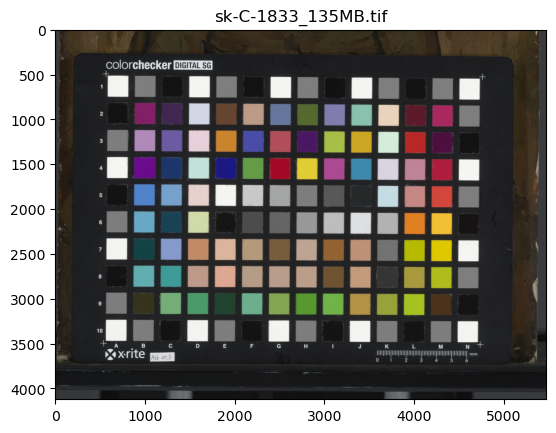
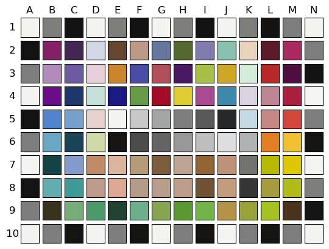

from colorchecker2cielab import downloadExtracting RGB values
A bit of image processing with scikit-image
In case you want to try the colorchecker2cielab package, but you do not have a color managed TIF image of a Digital Colorchecker target at hand, you can download our example TIF file with the download() function. Here is what the image looks like.
download_dir = '../downloads' # replace with your own directory (should exist)
download(download_dir)
..
Let’s see if now we can open the tif image and extract the RGB values for each color patch. This is done automatically with the function extract_color_patches().
from colorchecker2cielab import extract_color_patchestif_file = '/home/frank/Work/DATA/colorchecker2cielab-data/sk-C-1833_135MB.tif'rectangles, RGBs = extract_color_patches(tif_file)
RGBs| R | G | B | |
|---|---|---|---|
| A1 | 0.955448 | 0.957560 | 0.941383 |
| B1 | 0.492653 | 0.494630 | 0.491376 |
| C1 | 0.079232 | 0.076354 | 0.075660 |
| D1 | 0.958493 | 0.961770 | 0.947223 |
| E1 | 0.492466 | 0.494535 | 0.491158 |
| ... | ... | ... | ... |
| J10 | 0.955527 | 0.959005 | 0.947354 |
| K10 | 0.491213 | 0.493347 | 0.490840 |
| L10 | 0.082601 | 0.080506 | 0.075738 |
| M10 | 0.491507 | 0.493843 | 0.491844 |
| N10 | 0.953783 | 0.956727 | 0.944197 |
140 rows × 3 columns
If you want to see all 140 rows of the dataframe you can execute the following code.
To build this function a have made use of the powerful python package for image processing scikit-image.
TODO: Explain the steps in the extraction process.
download
download (download_dir=None)
*Download demo TIF image of Digital Colorchecker SG target to download_dir.
If download_dir is not specified, the current working directory is used. Otherwise, an existing directory should be used.*
extract_color_patches
extract_color_patches (tif_file, nrows=10, ncols=14, make_plot=True)